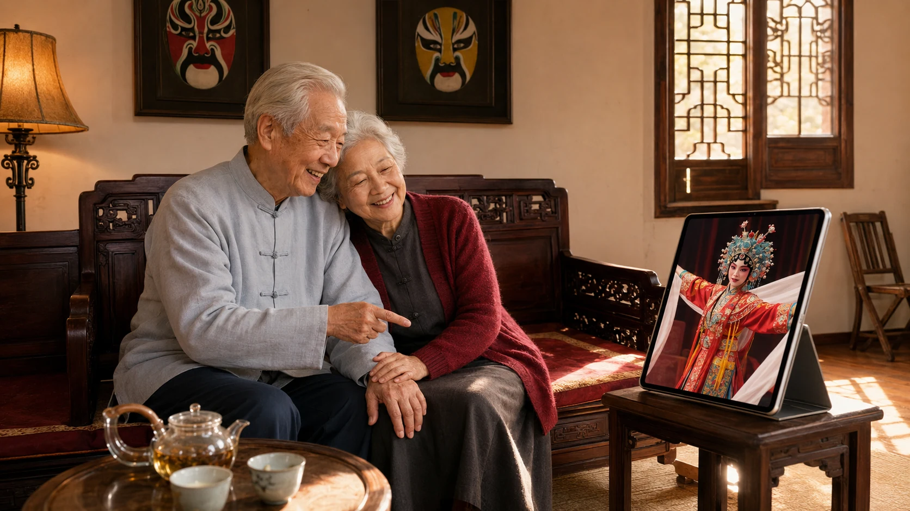

戏
数智·戏曲润心
首页
共创工坊
数智人物
儿童专区
老人陪伴
红色戏曲
文明互鉴
线下融合
长者陪伴听戏
陪您听戏，也陪您聊戏
大字、高对比、语音优先，让熟悉的唱腔更容易找到。

9:42
● 88%
今天想听哪一段？
京剧
豫剧
越剧
黄梅戏
点击剧种按钮开始听戏
🎙
语音点戏
适老模式 · 大字版
戏词接龙
系统：我唱“刘大哥讲话理太偏”，您接下一句。
换一句
跟唱速度
根据自己的节奏选择播放速度，跟随熟悉唱段慢慢练习。
慢速
原速
当前：原速
正在播放
×